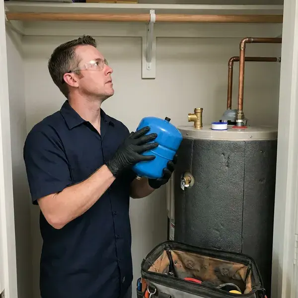

Water Heater Expansion Tank Installation in Urbandale, IA
Dripping relief valve or banging pipes in Urbandale, IA? A correctly sized expansion tank often fixes the problem in under two hours.
- Same-Day Installation Available
- Prompt, Local Service
- Local Urbandale Team
- Licensed Local Plumbers

Need Water Heater Expansion Tank Installation in Urbandale, IA?
Keep your water heater running safely and efficiently with our professional installation services.
Professional Water Heater Expansion Tank Installation in Urbandale, IA
KFR Plumbing specializes in the proper installation of water heater expansion tanks, a critical component for protecting your home's plumbing system from excessive pressure caused by water heating. With changing water temperatures and municipal water pressure, these tanks are key for preventing premature water heater failure and pipe damage.
Our expertise includes:
- Protecting water heaters from thermal expansion damage
- Extending water heater lifespan and protecting pipes.
- Secure strapping and bracket support on the cold water line

Additional Plumbing Installation Services in Urbandale, IA
We install water heaters, pumps, lines, and fixtures across Urbandale, IA with careful, permitted work that passes inspection the first time.


Customers
Why Choose KFR Plumbing for Water Heater Expansion Tank Installation in Urbandale, IA?
An expansion tank is a small part that does a big job, but only if it is sized and charged correctly. We take the time to measure your pressure instead of installing whatever tank is on the shelf.
- Code Compliance, Many local plumbing codes require expansion tanks for new water heater installations to ensure safety.
- Properly Supported, Tanks are strapped or bracketed so their weight never hangs on the piping.
- Full System Check, We inspect the PRV and relief valve while we are on site.
Citywide Coverage
Whether you are in an older district or a newer development of Urbandale, our skilled plumbers are ready to provide prompt and professional expansion tank installation. We are committed to protecting your home's plumbing no matter where you are in the city.
Experienced Team
Our team includes highly trained, licensed plumbers with extensive experience in water heater expansion tank installation. They stay current on the latest Iowa plumbing codes and best practices.
Safety-First Approach
Thermal expansion can push household pressure past 150 psi, the point where a temperature and pressure relief valve opens. A properly installed expansion tank keeps pressure in a safe range and protects the heater from strain.
Trusted Certified Urbandale Plumbing Services Professionals
At KFR Plumbing, we take pride in providing licensed, certified plumbing services throughout Urbandale, IA. Backed by recognized industry credentials, our experienced plumbers combine technical skill with genuine customer care. Whether it is repair, installation, or maintenance, we follow strict safety and quality standards to deliver lasting results you can trust.
Call Us Now PHCC Plumbing Contractor Recognition
PHCC Plumbing Contractor Recognition Better Business Bureau (BBB) Accreditation
Better Business Bureau (BBB) Accreditation Angi Certified Pro
Angi Certified Pro ISO 9001 Quality Management Certification
ISO 9001 Quality Management CertificationReliable Water Heater Expansion Tank Installation Services in Urbandale, IA
Brands and Quality Products in Urbandale, IA
KFR Plumbing uses only high-quality, durable expansion tanks from reputable manufacturers known for reliability. We work with proven brands like Watts, Amtrol and Z-Flex, so you receive a product built to last in your Urbandale, IA home. Our commitment to quality extends from the materials we use to the precision of our installation, giving you a long-lasting solution that reliably protects your plumbing system.

Residential Expansion Tank Services in Urbandale
For homeowners in Urbandale, our residential expansion tank services focus on protecting your family's plumbing and hot water supply. We understand that every home is different, and we tailor our installation to your water heater size, water pressure and household demand. This ensures your tank provides real protection against thermal expansion, a common issue that can lead to costly repairs if not addressed. We use durable tanks from respected brands for long-lasting performance.
Brands and Tank Materials in Urbandale, IA
We install potable-rated thermal expansion tanks from brands such as Watts, Amtrol and A.O. Smith. Potable tanks use a butyl diaphragm and a lined interior so water never touches bare steel. Private wells serve many rural homes, and nitrates, iron, and bacteria make regular well testing an important habit. Stainless steel connections hold up against corrosion from hard or aggressive water. We avoid tanks designed only for hydronic heating, since they are not approved for drinking water.
Expansion Tank for Tankless Water Heaters in Urbandale, IA
While tankless water heaters do not store hot water, an expansion tank can still be beneficial, and sometimes required, in Urbandale, IA plumbing systems. If your tankless unit is part of a closed system, an expansion tank can help absorb pressure spikes from the cold water supply or cut down wear on components. Our plumbers assess your tankless setup and local codes to determine whether an expansion tank is necessary and recommend the right solution for your system's longevity and performance.
Expansion Tank Replacement in Urbandale, IA
Expansion tanks wear out over time as the internal bladder or diaphragm fails and the tank fills with water. A waterlogged tank feels heavy, and tapping it produces a dull sound all the way up instead of a hollow top. Pressing the air valve and getting water instead of air is a sure sign it has failed. We replace failed tanks with a correctly sized new unit and check the precharge before installation.
Commercial and Multi-Unit Expansion Tanks in Urbandale
Apartment buildings, restaurants and offices with large commercial water heaters or multiple tanks need larger expansion tanks sized for total system volume. We calculate requirements for the entire hot water system, including any storage tanks and recirculation loops. Larger tanks are floor-mounted with proper supports. We schedule work to minimize hot water interruption for tenants or customers.
Amtrol Expansion Tank Services in Urbandale
Amtrol is another trusted name in water heater expansion tanks, known for smart design and long-lasting construction. KFR Plumbing offers professional installation of Amtrol expansion tanks throughout Urbandale, giving homeowners a reliable solution for thermal expansion control. Amtrol tanks feature durable butyl diaphragms and heavy-duty steel shells, engineered for years of trouble-free service. We select the correct size and model to match your water heater's capacity for maximum system protection.

Expansion Tank Installation Cost Comparison in Urbandale, IA
Adding an expansion tank during a water heater replacement is the most cost-effective approach because the water is already off and the piping is open. Installing one as a standalone job costs a bit more in labor but still pays for itself by protecting the heater. Larger tanks, attic installs and PRV replacement add to the total. We provide a clear price before any work begins.
Water Heater Expansion Tank Installation Near Me in Urbandale, IA
Our plumbers work in Urbandale every day and know how local water pressure and regulators affect water heaters. That experience lets us size your tank correctly the first time. You get a quick, clean installation and a system that stays balanced.
When you search for 'water heater expansion tank installation near me' in Urbandale, IA, KFR Plumbing is your dependable local choice. Our team is ready to respond quickly to your plumbing needs across the entire Urbandale area.
KFR Plumbing at a Glance
- Fully licensed plumbing team covering Urbandale, IA
- 24/7 emergency service with same-day scheduling
- Upfront, flat-rate pricing before work begins
- 4.8-star rated by 620+ Iowa customers
Urbandale Map
Urbandale Information
- Population
- 46,729
- Area codes
- Local
- Service area
- Urbandale and communities within 40 miles
- Nearby
- West Des Moines, Waukee, Des Moines, Ankeny
For homes in Urbandale, IA, where municipal water systems often include backflow prevention, a water heater expansion tank is vital for managing thermal expansion and protecting your plumbing from unnecessary stress.
Expert Services
Trust our professionals for reliable KFR Plumbing solutions in Urbandale, IA.
Our Specialized Plumbing Services in Urbandale, IA
At KFR Plumbing, we provide a complete range of plumbing services across Urbandale, IA. From leak detection to full system installations, our team ensures fast, precise, and affordable service for both residential and commercial properties. Explore our core services below:


How Our Water Heater Expansion Tank Installation Process Works in Urbandale, IA
Our installation process for water heater expansion tanks is simple and designed to minimize disruption to your home in Urbandale.
Request a Quote
Reach us at (515) 308-3583 or fill out our online form to schedule an initial consultation. We will discuss your needs and provide a clear, upfront estimate.
On-Site Assessment
Our expert plumber will visit your Urbandale home to assess your current water heater and plumbing system. This allows for accurate sizing and placement for the expansion tank.
Professional Installation
We will expertly install your new water heater expansion tank, following all local Iowa codes and manufacturer specifications. We leave you with a clean, secure and fully functional setup.
Frequently Asked Questions About Water Heater Expansion Tank Installation in Urbandale
The cost for water heater expansion tank installation in Urbandale generally ranges from $250 to $500, including parts and labor. This can vary based on the tank size, the complexity of the installation and any necessary plumbing changes. We provide transparent, upfront pricing after an on-site visit.
A typical water heater expansion tank can last anywhere from 5 to 10 years. Private wells serve many rural homes, and nitrates, iron, and bacteria make routine well water testing an important habit. Water quality, system pressure and installation quality all influence its lifespan, and regular inspections can help identify when a replacement is needed.
A waterlogged tank feels heavy and sounds solid when tapped near the top. Water coming out of the air valve when pressed is a clear sign the bladder has failed.
An expansion tank is crucial in Urbandale because water expands when heated. Without a tank to absorb this expansion, the increased pressure can damage your water heater, pipes and fixtures. Plumbers in Iowa must hold a state license, so confirming a license before work starts is a simple way to protect your home. Many local plumbing codes also require expansion tanks for safety and system longevity.
We install high-quality expansion tanks from leading manufacturers known for reliability and durability. Our preferred brands include Watts, Amtrol and Z-Flex, so you receive a product built to last and perform reliably.
KFR Plumbing stands behind our workmanship and the quality of the products we install. We offer a warranty on both the expansion tank itself, per the manufacturer's terms, and our installation labor. Specific warranty details will be explained at the time of service.
While it might seem like a simple task, installing a water heater expansion tank involves working with pressurized water lines and getting the sizing and code compliance right. It is best to hire a licensed plumber for a safe, correct installation that avoids leaks or damage to your system.
Permit requirements for expansion tank installation can vary depending on local codes in Urbandale and whether it is part of a larger water heater replacement. Our team at KFR Plumbing is familiar with local regulations and can advise you on any permits needed for your installation.
What People Are Saying About Our Plumbing Experts?

Sofia M.
Two new toilets installed in one visit, no mess left behind, and the tech even adjusted a faucet he noticed was dripping. Fair pricing and really friendly.
Toilet Installation · Des Moines, IA
James P.
Our commercial plumbing system had a leak under the sink, and KFR Plumbing handled it professionally. The plumbers arrived quickly and restored everything without disruption to our customers.
Commercial Plumbing · West Des Moines, IA
Patricia H.
We had a slab leak that two other companies could not find. KFR Plumbing located it in under an hour, explained our options, and the price matched the quote to the dollar.
Slab Leak Repair · Cedar Falls, IALaura S.
I scheduled a water heater replacement, and the team made the process smooth and affordable. The new unit works perfectly, and they cleaned up after completing the job.
Water Heater Replacement · Ankeny, IA
Daniel K.
A pipe burst at 11 pm and they actually answered. The plumber showed up within the hour, shut everything down, and had us back to normal the next morning. Could not ask for more.
Emergency Plumbing · Ames, IA
Mark T.
When our office needed drain cleaning, KFR Plumbing provided quick, reliable service. The plumber arrived on time and made sure every drain flowed perfectly before leaving. Very satisfied.
Drain Cleaning · Urbandale, IA